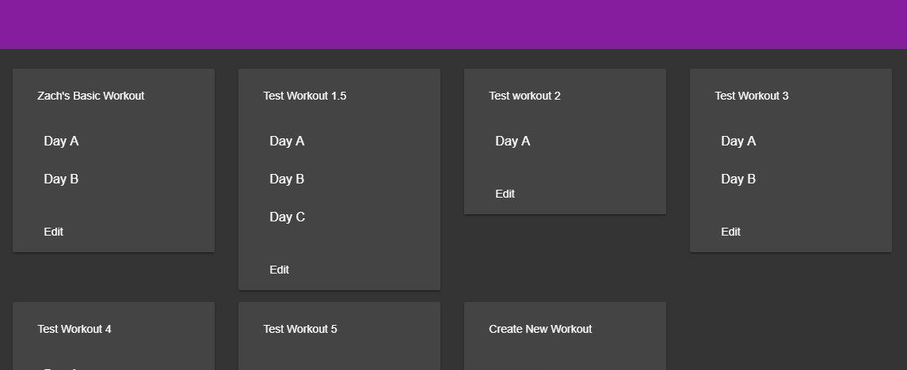
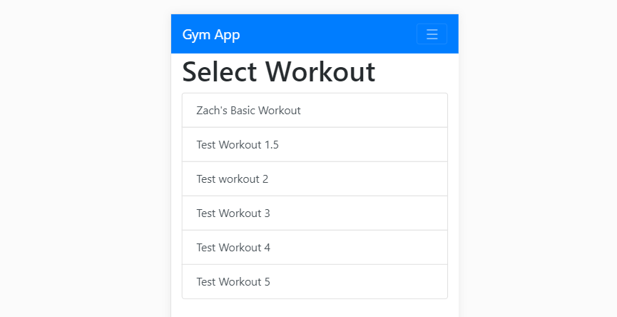
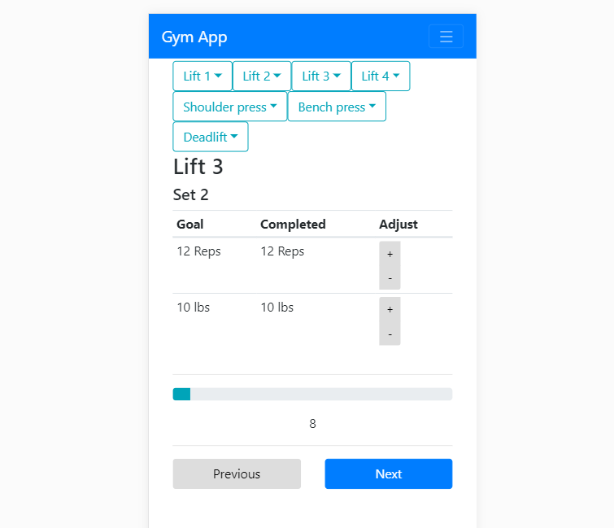
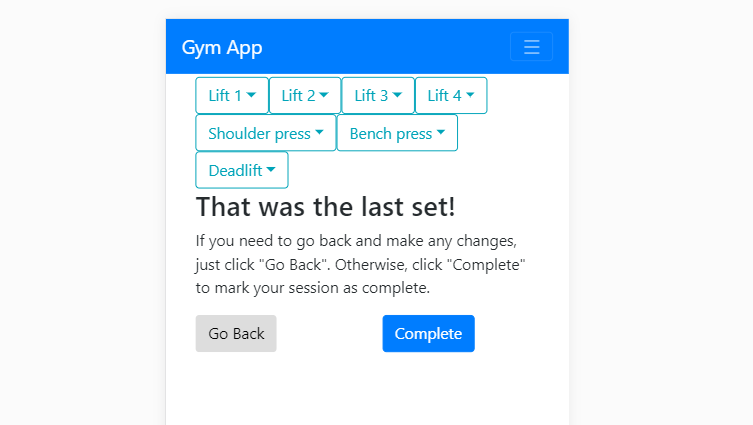
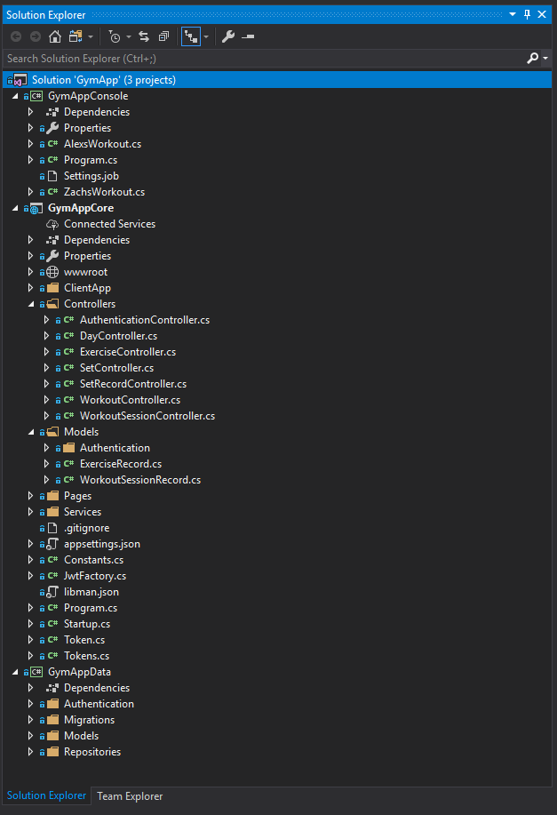
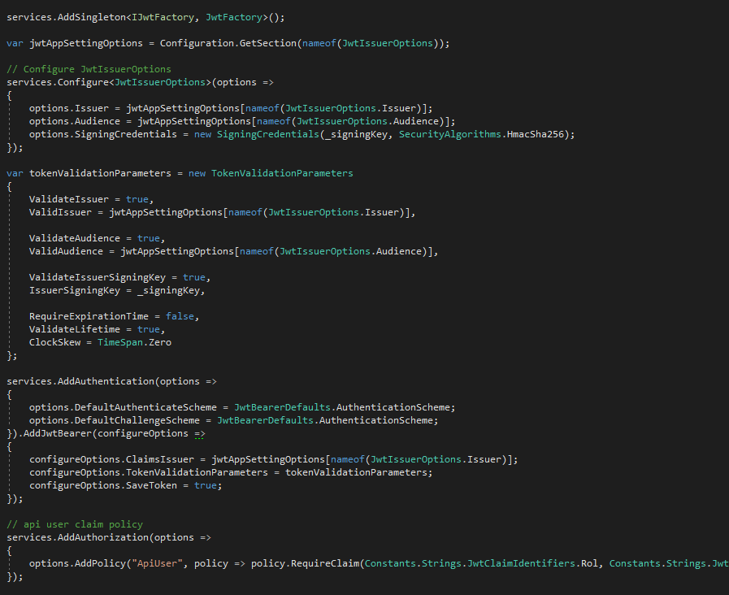

I've decided to take a detour from the assigned work. I've decided to replace the last three homework's with something I have been learning recently. I hope it will make for an interesting read. What follows will be a 3 part series. Part 1, this part, will cover .Net Core. Part 2 will cover working with Angular6 and .net core. Part 3 will cover Angular6 a little deeper. Enjoy the read!
I recently starting working on a web app that I could use at the gym. I had been working out a lot and was not able to find an app the was exactly what I wanted. It was time for me to learn some new technologies so I decided to make a web app that tracked my workouts. The app itself is still being worked on but currently has enough features that I use it daily. Lets take a quick look at the app itself and what it does. Check it out for yourself here if you want to follow along.
First step is signing up and logging in. I am going to skip that part. Once you have an account you are going to want to design a workout for yourself. So we will start on that page. The first image is the workout list page. It lists all of the different workouts a user has designed for themselves. Here you can either edit or create a new workout. We will edit one of my workouts.
Workouts are broken down into days, exercises and sets. You can see in the screenshot how the relationship plays out. The user first creates a day then some exercises and finally sets for those exercises. The sliders next to each column is used to set the order. This is important for when the user actually heads to the gym to use the app. Lets take a look at what this workout looks like in the gym.
When navigating to the workout of your choice the app will notify you if you have an incomplete workouts. You can either resume or start a fresh one. Either way the next screen looks like this.
From here you follow along in the gym marking down your progress as you go. The bar at the bottom is a workout timer that can be used to measure rest periods. There are options to adjust the actual weight and rep count completed. This will be used in the future to automatically adjust the goals for the user. The end goal is to have the app handle weight progression for the user. When it detects a user has gained enough strength it will automatically raise the weight for a lift. If the user appears to be stuck it will switch to a "deload" pattern which is a common tactic for weightlifters who have stalled.
Finally when the user has finished their session we finalize all of the data and mark the session as complete. During the session the data is stored in browser storage in order to create an incredibly fast user experience. Whenever the user hits back or next their data changes are sent to the server asynchronously and saved. This happens in the background and never notifies the server. Errors are hidden and reattempts are made behind the scenes.
Below is a screen shot of my solution. Unfortunately, Visual Studio has really poor tooling for Angular6 and TypeScript so I use Visual Studio Code for all of my front end work. We will take a look at that in part 2.
Starting from the top is my GymAppConsole. I use this to seed my workout and my wifes workout as you can see listed there as ZachsWorkout.cs. Inside is just an EF insert statement that is called from the console.
Below that is the GymAppCore project. This is my main .NET Core project. Inside of the ClientApp folder is all of my front end code. I only work on that using VSCode as mentioned above.
Following that I have my Controllers. Each of them are WebApi controllers. On the inside they look like this:
The controllers are not strictly RESTful but they are close to it. Following the REST pattern 100% is important for public API's but less so for private ones. The time saving was a worth while tradeoff for me in this case. In the constructor I've got very basic dependency injection. The first line in each method is a authentication check. Those are redundant since I have the [Authorize] attribute on the class.
Going back to the solution explorer is the models folder. Those are just basic models that are used by the API to communicate with the front end. Finally is the Services folder. In there I keep my services that are used by the controllers. The services contain the business logic that the app needs to do. For example, sometimes additional meta data needs to be added records before they are saved. That data is added in the service. The service is then responsible for calling a repository that provides access to the database.The database for this project is a SQL Server DB hosted in Azure.
Startup.cs is perhaps the biggest change from .NET Framework to .NET Core. It now handles the initialization of all the modules needed by the application. It also sets up dependency injection for the application.
An example of dependency injection setup.
An example of setting up the jwt(JSON web token) module.
The jwt's are used to manage session on the front end. A jwt is created when the user logs in and is set to the client. In the next part we will take a closer look at how Angular6 uses the jwt to handle internal routing and includes it in every request sent to the server.
.NET Core is exceptionally fast. Whenever you save a .cs file it automatically rebuilds the entire project. It does this without me even noticing most of the time. That's the power of the new Roslyn compiler. Creating an API is also exceptionally easy. Getting the authentication up and running however was very difficult. That task took me a few weeks as the documentation online was spotty. That is the feature I miss the most from the previous version: out of the box authentication. Part 2 will cover a much more difficult part of my project: Working with both Angular6 and .NET Core.
jwt is created when the user logs in and is set to the client. In the next part we will take a closer look at how Angular6 uses the jwt to handle internal routing and includes it in every request sent to the server.